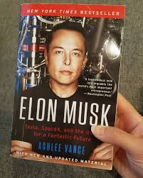

Elon Reeve Musk born June 28, 1971 is a business magnate, investor and engineer. He is the founder, CEO, and lead designer of SpaceX;co-founder, CEO, and product architect of Tesla, Inc.; and co-founder and CEO of Neuralink. In December 2016, he was rank.ed 21st on the Forbes list of The World's Most Powerful People. As of February 2018, he has a net worth of $20.8 billion and is listed by Forbes as the 53rd-richest person in the world.
Early life
Born in Pretoria, South Africa, Musk taught himself computer programming at the age of 12. He moved to Canada when he was 17 to attend Queen's University. He transferred to the University of Pennsylvania two years later, where he received an economics degree from the Wharton School and a degree in physics from the College of Arts and Sciences. He began a Ph.D. in applied physics and material sciences at Stanford University in 1995 but dropped out after two days to pursue an entrepreneurial career. He subsequently co-founded Zip2, a web software company, which was acquired by Compaq for $340 million in 1999. Musk then founded X.com, an online payment company. It merged with Confinity in 2000 and became PayPal, which was bought by eBay for $1.5 billion in October 2002.
Achievements

CEO and product architect of Tesla Motors, Elon revolutionised the electric cars.
Founder of Space Exploration Technologies, also known as SpaceX.
Musk unveiled a concept for a high-speed transportation system Hyperloop.
Tesla acquired of SolarCity for $2.6 billion.
In 2015 Tesla introduced Powerwall.
In 2015 Musk announced the creation of OpenAI.
In 1995 he started Zip2, a web software company that was renamed to Paypal in 2001.
In 2002 PayPal was acquired by eBay for US$1.5 billion in stock, of which Musk received US$165 million.
In 1999 Musk co-founded X.com, an online financial services and e-mail payment company with US$10 mn from the sale of Zip2.
In 1994 recieved a Bachelor of Science in physics fromCollege of Arts and Sciences.
In 1983 he taught himself computer programming and at age 12, sold the code for a BASIC-based video game he created called Blastar for approximately US$500.